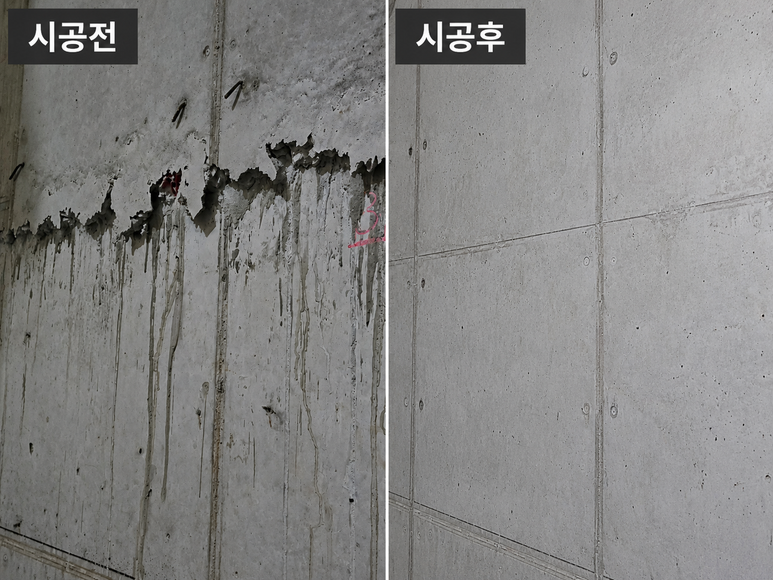

BEFORE / AFTER철골조 창호 누수 보수 - 녹 부위 샌딩·방청·실리콘 재시공철골조에 설치한 창호에서 누수가 발생한 현장. 철골 녹이 팽창하며 실리콘이 파열된 부위의 녹을 샌딩하고 방청 처리한 뒤 실리콘을 다시 시공한 창호 누수보수 사례입니다.
BEFORE / AFTER철골조 창호 누수 보수 - 녹 부위 샌딩·방청·실리콘 재시공철골조에 설치한 창호에서 누수가 발생한 현장. 철골 녹이 팽창하며 실리콘이 파열된 부위의 녹을 샌딩하고 방청 처리한 뒤 실리콘을 다시 시공한 창호 누수보수 사례입니다.
BEFORE & AFTER
시공사례
보정하지 않은 시공 전 · 시공 중 · 시공 후 사진과 그때 쓴 공법을 그대로 공개합니다.
보수의 완성도는 사진 한 장이 아니라 시공 전과의 차이에서 드러납니다.
아래 사례는 모두 노출콘크리트 표면 결함 복원과 특수방수 현장의 기록입니다. 각 사례에는 결함의 상태, 그때 선택한 배합과 공법, 그리고 시공 단계별 사진이 함께 들어 있습니다.
총 50건 · 최근 사례부터
BEFORE / AFTER철골조 창호 누수 보수 - 녹 부위 샌딩·방청·실리콘 재시공철골조에 설치한 창호에서 누수가 발생한 현장. 철골 녹이 팽창하며 실리콘이 파열된 부위의 녹을 샌딩하고 방청 처리한 뒤 실리콘을 다시 시공한 창호 누수보수 사례입니다. BEFORE / AFTER성수동 의류매장 인테리어 피처월 No.2 - Vintage Feature Wall성수동 의류매장 피처월 구간에서 이전 마감재가 뜯겨 나간 얼룩진 콘크리트 벽체와 기둥을 노출콘크리트 면보수재 콘채로 정리하고, 에이징 패턴과 코팅 마감으로 빈티지 노출콘크리트 분위기를 만든 사례. 시공 전 8장·시공 후 7장의 현장 사진.
BEFORE / AFTER성수동 의류매장 인테리어 피처월 No.2 - Vintage Feature Wall성수동 의류매장 피처월 구간에서 이전 마감재가 뜯겨 나간 얼룩진 콘크리트 벽체와 기둥을 노출콘크리트 면보수재 콘채로 정리하고, 에이징 패턴과 코팅 마감으로 빈티지 노출콘크리트 분위기를 만든 사례. 시공 전 8장·시공 후 7장의 현장 사진. BEFORE / AFTER계단의 빈티지느낌의 노출콘크리트기존 콘크리트 계단의 불균일한 표면과 파손 부위를 면정리하고, 계단 측면·하부를 노출콘크리트 면보수재 콘채와 콘채 퍼티로 보정해 빈티지 콘크리트 질감으로 마감한 사례. 시공 전 6장·시공 후 7장의 현장 사진과 전후 비교 이미지.
BEFORE / AFTER계단의 빈티지느낌의 노출콘크리트기존 콘크리트 계단의 불균일한 표면과 파손 부위를 면정리하고, 계단 측면·하부를 노출콘크리트 면보수재 콘채와 콘채 퍼티로 보정해 빈티지 콘크리트 질감으로 마감한 사례. 시공 전 6장·시공 후 7장의 현장 사진과 전후 비교 이미지. BEFORE / AFTER성수동 의류매장 인테리어 피처월 No.1 - Vintage Feature Wall성수동 의류매장 인테리어 피처월의 콘크리트 개구부 주변 파손 부위와 불균일한 표면을 노출콘크리트 면보수재 콘채로 면정리하고 기존 콘크리트와 이어지는 질감으로 복원한 사례. 시공 전 3장·시공 후 3장의 현장 사진.
BEFORE / AFTER성수동 의류매장 인테리어 피처월 No.1 - Vintage Feature Wall성수동 의류매장 인테리어 피처월의 콘크리트 개구부 주변 파손 부위와 불균일한 표면을 노출콘크리트 면보수재 콘채로 면정리하고 기존 콘크리트와 이어지는 질감으로 복원한 사례. 시공 전 3장·시공 후 3장의 현장 사진. BEFORE / AFTER옥상 탄성우레탄 방수 시공과정 - 바탕정리·하도·씰란트·중도옥상 바닥의 구배를 확인하고 바탕을 정리한 뒤 우레탄 하도, 씰란트, 탄성우레탄 중도 순서로 시공한 옥상 방수 사례입니다. 상도는 공정 설명으로 함께 정리했습니다.
BEFORE / AFTER옥상 탄성우레탄 방수 시공과정 - 바탕정리·하도·씰란트·중도옥상 바닥의 구배를 확인하고 바탕을 정리한 뒤 우레탄 하도, 씰란트, 탄성우레탄 중도 순서로 시공한 옥상 방수 사례입니다. 상도는 공정 설명으로 함께 정리했습니다. BEFORE / AFTER화장실 바닥 누수 - 슬래브 관통부 보수와 지수 방수겉보기에는 멀쩡한 화장실에서 누수가 발생한 현장. 타일과 몰탈을 철거해 슬래브의 관통 구멍을 확인하고, 접착·고강도 보수몰탈·초급결 지수 처리와 담수시험 후 타일을 시공한 사례입니다.
BEFORE / AFTER화장실 바닥 누수 - 슬래브 관통부 보수와 지수 방수겉보기에는 멀쩡한 화장실에서 누수가 발생한 현장. 타일과 몰탈을 철거해 슬래브의 관통 구멍을 확인하고, 접착·고강도 보수몰탈·초급결 지수 처리와 담수시험 후 타일을 시공한 사례입니다. BEFORE / AFTER타운하우스 평지붕 옥상누수 - 액체고무방수타운하우스 평지붕 옥상 누수 현장. 드레인 주변 구배와 파라펫·조인트 균열을 정리하고 초급결지수제와 크랙실란트로 보수한 뒤 침투성 액상고무방수와 탄성도막방수로 마감한 사례입니다.
BEFORE / AFTER타운하우스 평지붕 옥상누수 - 액체고무방수타운하우스 평지붕 옥상 누수 현장. 드레인 주변 구배와 파라펫·조인트 균열을 정리하고 초급결지수제와 크랙실란트로 보수한 뒤 침투성 액상고무방수와 탄성도막방수로 마감한 사례입니다. BEFORE / AFTER알루미늄 창호 창틀 주변 누수 - 사춤 균열 보수알루미늄 창호의 창호 사춤 균열로 누수가 발생한 현장. 기존 바탕면을 제거하고 사춤면 주변에 초속경 방수제를 투입한 뒤 창틀 주변 도막방수와 코킹으로 마감하며 단계마다 살수 테스트를 한 사례입니다.
BEFORE / AFTER알루미늄 창호 창틀 주변 누수 - 사춤 균열 보수알루미늄 창호의 창호 사춤 균열로 누수가 발생한 현장. 기존 바탕면을 제거하고 사춤면 주변에 초속경 방수제를 투입한 뒤 창틀 주변 도막방수와 코킹으로 마감하며 단계마다 살수 테스트를 한 사례입니다. BEFORE / AFTER제주 성읍 구옥 옥상방수 - 연삭·드레인 보강·폴리머시멘트·탄성도막제주 성읍 구옥의 노후 옥상을 연삭, CX-1 드레인 주변 보강, 폴리머시멘트 방수, 탄성도막방수 순서로 시공하고 창틀 하부 균열부에는 우레탄 인젝션을 적용한 사례입니다.
BEFORE / AFTER제주 성읍 구옥 옥상방수 - 연삭·드레인 보강·폴리머시멘트·탄성도막제주 성읍 구옥의 노후 옥상을 연삭, CX-1 드레인 주변 보강, 폴리머시멘트 방수, 탄성도막방수 순서로 시공하고 창틀 하부 균열부에는 우레탄 인젝션을 적용한 사례입니다. BEFORE / AFTER40년 된 구옥 옥상 누수 - 폐콘 철거 후 우레탄방수준공 40년 된 구옥의 증축 옥상에서 누수 원인이던 폐콘 채움층을 철거하고, 메쉬 보강과 우레탄 하도·실란트·중도·상도로 방수했으며 하부에서는 우레탄 인젝션도 적용한 사례입니다.
BEFORE / AFTER40년 된 구옥 옥상 누수 - 폐콘 철거 후 우레탄방수준공 40년 된 구옥의 증축 옥상에서 누수 원인이던 폐콘 채움층을 철거하고, 메쉬 보강과 우레탄 하도·실란트·중도·상도로 방수했으며 하부에서는 우레탄 인젝션도 적용한 사례입니다. BEFORE / AFTER외벽 사인장균열 누수 - 우레탄 인젝션과 균열·박락 마감 보수노출콘크리트 외벽 개구부 하부의 사인장균열(사선균열)을 따라 누수가 진행된 현장. 우레탄 인젝션으로 관통 균열을 충진하고, 인젝션 패커 제거 후 균열·박락 부위를 크랙실란트와 보수몰탈로 마감 보수한 사례입니다.
BEFORE / AFTER외벽 사인장균열 누수 - 우레탄 인젝션과 균열·박락 마감 보수노출콘크리트 외벽 개구부 하부의 사인장균열(사선균열)을 따라 누수가 진행된 현장. 우레탄 인젝션으로 관통 균열을 충진하고, 인젝션 패커 제거 후 균열·박락 부위를 크랙실란트와 보수몰탈로 마감 보수한 사례입니다.
BEFORE / AFTER계단실 층간조인트의 노출콘크리트 면보수계단실 벽체의 층간조인트를 따라 남은 불규칙한 경계선과 흘러내린 자국을 노출콘크리트 면보수로 정리한 사례. 시공 전 9장·시공 후 7장의 현장 사진으로 전후 상태를 비교할 수 있다.TECHNICAL NOTES
공법이 궁금하시다면
사례에 쓰인 공정별 기준과 판단 근거는 기술자료에 따로 정리해 두었습니다.
CONTACT
비슷한 현장이 있으신가요?
현장사진을 보내주시면 보수 방향을 검토해 회신드립니다.